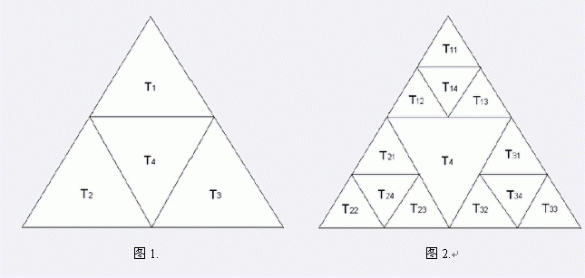

画一个等边三角形，把三边的中点连接起来，得到四个三角形，把它们称为T1,T2,T3,T4，如图1。把前三个三角形
也这样划分，得到12个更小的三角形：T11,T12,T13,T14,T21,T22,T23,T24,T31,T32,T33,T34，如图2。把编号以1
，2，3结尾的三角形又继续划分…最后得到的分形称为Sierpinski三角形。

如果B不包含A，且A的某一条完整的边是B的某条边的一部分，则我们说A靠在B的边上。例如T12靠在T24和T4上，但
不靠在T32上。给出Spierpinski三角形中的一个三角形，找出它靠着的所有三角形。